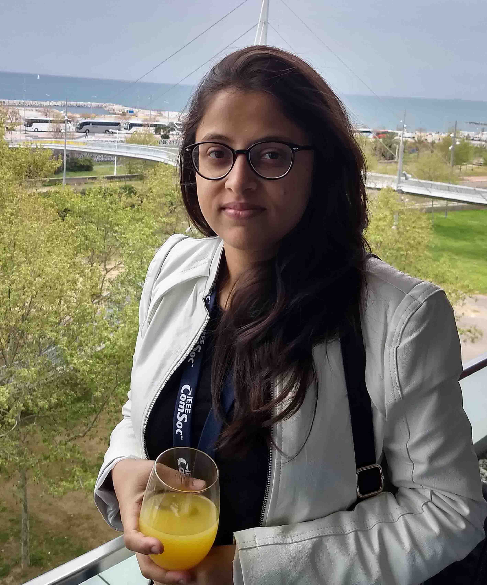

Currently, I am pursuing my Ph.D. degree in Computer Networks at Indian Institute of Technology Kharagpur, India, under the supervision of Prof. Sudip Misra and Prof. Jhareswar Maiti. Prior to that, I received my Master of Science (by Research) (M.S.) degree from the Department of Computer Science and Engineering, Indian Institute of Technology Kharagpur, India in 2019. My M.S. thesis is entitled as "QoS-Aware Sensors-as-a-Service in Sensor-Cloud". I completed my Bachelor of Technology degree in Electronics and Communication Engineering from Institute of Engineering and Management, Kolkata, Maulana Abul Kalam Azad University of Technology (Formerly knows as WBUT), India in 2015. I am a graduate student member of IEEE and ACM.
I am a member of Smart Wireless Applications & Networking (SWAN) Research Group, Indian Institute of Technology Kharagpur, India.
Click here to download my resume.
Indian Institute of Technology Kharagpur
Supervisor: Prof. Sudip Misra
Computer Science and Engineering
Indian Institute of Technology Kharagpur
Thesis Title: QoS-Aware Sensors-as-a-Service in Sensor-Cloud
Supervisor: Prof. Sudip Misra
Electronics and Communication Engineering
Institute of Engineering and Management, Kolkata
Maulana Abul Kalam Azad University of Technology (Formerly knows as WBUT)
School: Vivekananda Siksha Niketan High School
Board: West Bengal Council of Higher Secondary Education
School: Vivekananda Siksha Niketan High School
Board: West Bengal Board of Secondary Education
Course: Programming and Data Structures Lab (CS19001)
Course Instructors: Prof. Sudip Misra
Department of Computer Science and Engineering
Indian Institute of Technology Kharagpur
Spring Semester 2020-2021
Duration: January 2021 - July 2021
Course: Programming and Data Structures Lab (CS19001)
Course Instructors: Prof. Sudip Misra
Department of Computer Science and Engineering
Indian Institute of Technology Kharagpur
Autumn Semester 2020-2021
Duration: July 2020 - December 2020
Course: Programming and Data Structures Lab (CS19001)
Course Instructors: Prof. Bivas Mitra and Prof. Partha Bhowmick
Department of Computer Science and Engineering
Indian Institute of Technology Kharagpur
Autumn Semester 2018-2019
Duration: July 2018 - December 2018
Course: Programming and Data Structures Lab (CS19001)
Course Instructors: Prof. Sudebkumar Prasant Pal and Prof. Rogers Mathew
Department of Computer Science and Engineering
Indian Institute of Technology Kharagpur
Spring Semester 2017-2018
Duration: January 2018 - June 2018
Course: Programming and Data Structures Lab (CS19001)
Course Instructor: Prof. Debasis Samanta
Department of Computer Science and Engineering
Indian Institute of Technology Kharagpur
Autumn Semester 2017-2018
Duration: July 2017 - December 2017
Course: Programming and Data Structures Lab (CS19001)
Course Instructor: Prof. Rogers Mathew
Department of Computer Science and Engineering
Indian Institute of Technology Kharagpur
Spring Semester 2016-2017
Duration: January 2017 - June 2017
Project Title: An Indigenous Framework for Authenticity Integrity and Non-Repudiation in Data Communication
Sponsored Research and Industrial Consultancy
Indian Institute of Technology Kharagpur
Designation: Senior Research Fellow
Sponsored by: Defence Research and Development Organisation (DRDO)
Duration: April 2018 - Present
Project Title: An Indigenous Framework for Authenticity Integrity and Non-Repudiation in Data Communication
Sponsored Research and Industrial Consultancy
Indian Institute of Technology Kharagpur
Designation: Junior Research Fellow
Sponsored by: Defence Research and Development Organisation (DRDO)
Duration: April 2016 - April 2018
Name: Kalyani Yalamanchili
National Institute of Technology Durgapur
Winter Intern (2017-2018)
Topic: Implementation of Sensor-Cloud
Name: Dhanush Narayan Kamath
National Institute of Technology Surat
Summer Intern (2017-2018)
Topic: Blockchain-based Architecture for Sensor-Cloud
|